32 NibWeevil
plant

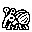

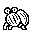


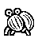
32 creatures, each with front and back views at both sizes. Every exported PNG has exact dimensions, binary black/white pixels and a transparency mask. Click a sprite to download it.
Download32×32 set · Download48×48 set · Original concept boards
plant



plant / earth
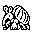
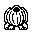
plant / earth
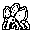
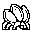
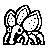
plant / water
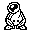
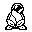
plant / water
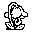
plant / spirit
plant / spirit
earth / plant
water / earth
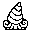
water / elder
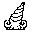
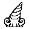
water / earth
earth / elder
water / earth
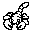
water / elder
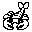
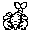
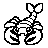
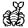
water / earth
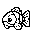
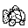
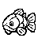
water / elder
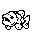
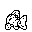
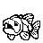
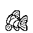
fire / earth
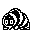
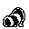
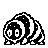
fire / earth
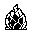
fire / earth
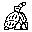
earth / lightning
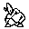
earth / lightning
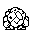
wind / plant
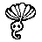
wind / plant
lightning / plant
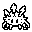
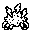
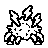
spirit / plant
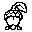
spirit / plant
spirit / earth
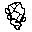
spirit / elder
plant / elder
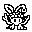
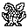
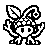
elder / plant
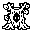
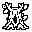
elder / plant
elder / spirit